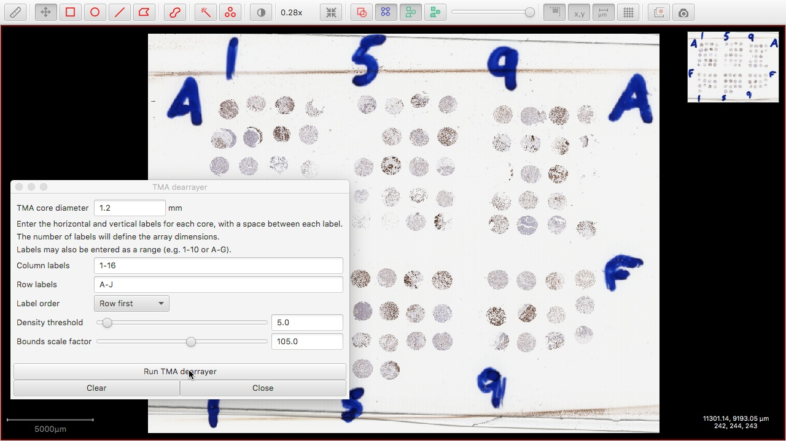
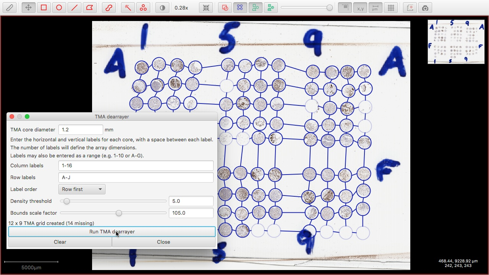

<p>Automatically identify and label Tissue Microarray cores.</p>


<details>
<summary>Screenshots</summary>

<div class="fig">

<figcaption>
Automated TMA dearraying dialog box.
</figcaption>
</div>


<div class="fig">

<figcaption>
Results of automated TMA dearraying.
</figcaption>
</div>

</details>